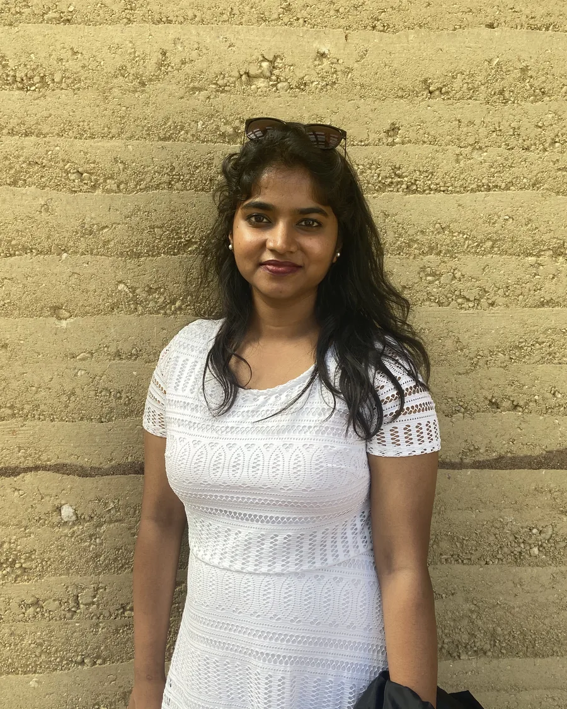

Earth. Craft. Belonging.
Studio Nalmé creates contemporary architecture rooted in its context, place and people, shaped by the soil beneath us and the knowledge held in local hands.
Buildings made
of place.
A selection of projects, each shaped by its place. Click through for the photographs.

Tejaswini Krishna P.
Tejaswini is an architect, a potter, and someone who has never been comfortable drawing what she hasn't first made with her hands.
Her path into earth architecture began at Made in Earth, deepened through housing work with SELCO and PLENTI at Andagere Architects, and found its form at BASEhabitat — where she built alongside Nina Pawlicki, Helena Sandman, and Jan Glasmier, attended Martin Rauch's rammed-earth workshops, and completed her thesis — the Hadibadi library, mentored by Anna Heringer and shortlisted for the Architecture in Development Global Challenge.
She started Studio Nalmé as a quest — to build with consciousness toward ecology, craft, and community. When she is not designing or making, she is hiking, throwing clay, or looking for the next material that surprises her.
How we see
every project.
Our practice begins by listening to the land. To the soil and the slope, the wind and the light, the water and the hands that have built here before us. We believe that what already exists in a place — its materials, its memory, its people — holds the most honest answer to what should be built.
We work with earth, lime, stone, and other materials found close to the site, alongside the craftspeople who know them best. Not because these are the sustainable choice, but because they are the most intelligent response to this climate, this land, and this moment in the history of making.
Every project is a search for the decision that is structural, beautiful, and specific to this place alone. We call it the warm idea — the one that is not only right for the site, but felt by the person who lives in it.

Rooted in the Kannada word for affection, our practice is built on the belief that spaces should nurture those who inhabit them.
Heart. Hands. Home.
We build with love, by hand, toward belonging.
Three ways of seeing every project.
People & Place
Every decision serves the people who inhabit the space, and the place it stands on.
Material & Making
We work with natural materials, and give the crafts that shape them a place in contemporary life.
Climate & Belonging
A building should belong to its site so completely that it feels impossible anywhere else.
Made by hand.
Made to last.
Light, cloth, tile, wood, cane. Things from the studio, and from the hands of makers we have come to trust. Most are made to order, made for one place at a time. None are in a hurry.

Field notes.
Workshops, travels, visits to lime kilns and craft villages. What we are learning, season by season.
A weekend with permaculture, in the soil
Notes from a two-day workshop on regenerative land design — what stayed with us long after the participants left.
TravelAt the lime kilns of Athangudi
A short journey to Tamil Nadu's tile country, and the slow patience of fire, sand, and pigment.
CraftOn Kaudi: the affection of stitched cloth
Why the rugs, blankets, and floor cushions we live with carry the warmth of the hands that made them.
The next dispatch, in your inbox.
Occasional letters from the studio. What we are reading, building, and learning.
Every project,
any scale.
Whether you have land to design, a space to imagine, a material to explore, or simply want to join the next workshop, we would love to hear from you.
Project Enquiry
The brief, in your words.